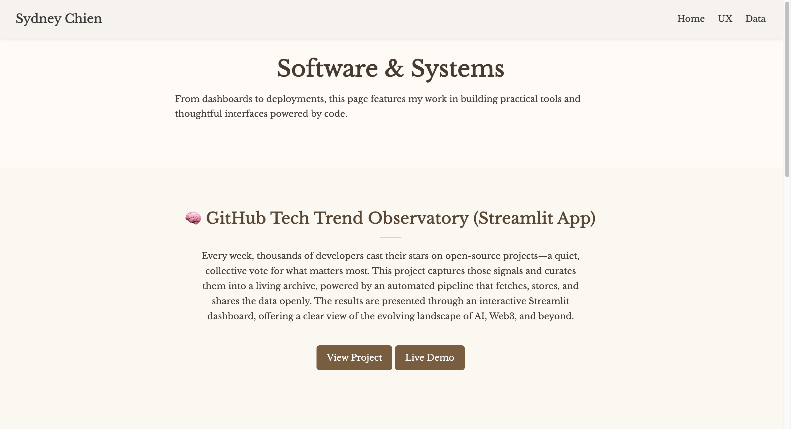
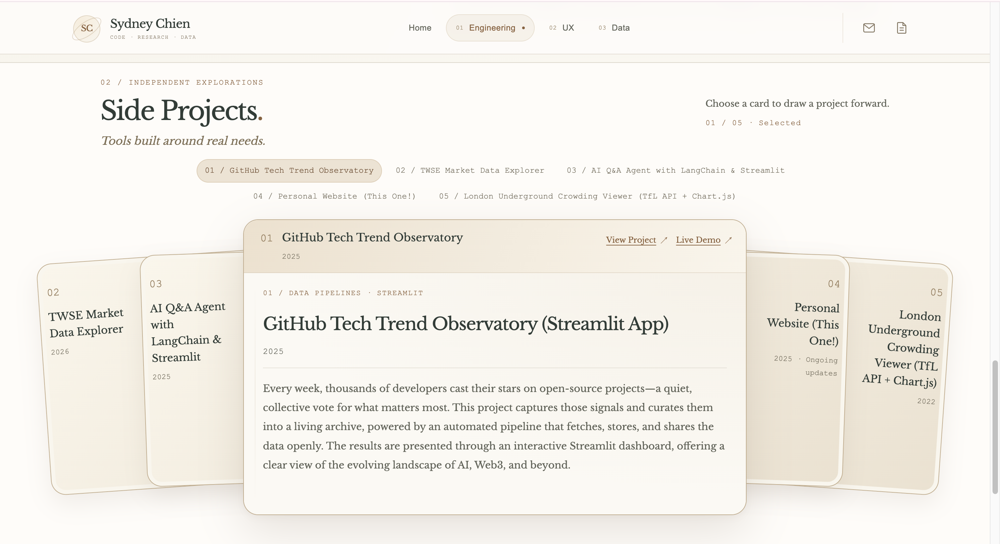
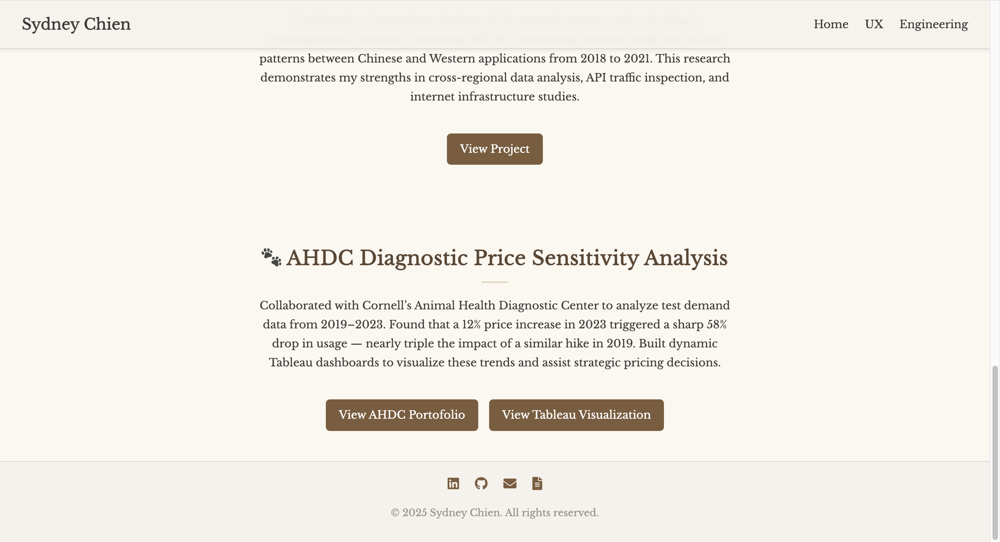
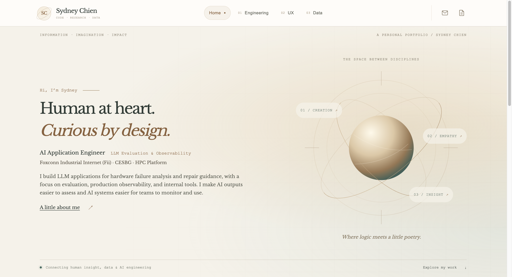

Choose a project, then act without scrolling.


Separate choosing from opening. Readers can select a project by name and access its source or demo before reading the full description.
ABOUT THIS WEBSITE
This website brings together my work across AI engineering, UX, and data. Here’s how its layout and interactions have evolved.
original website · iteration
01 / BEFORE & AFTER
Two interface changes, with the reason behind each. Select an image to view it at full size.


Separate choosing from opening. Readers can select a project by name and access its source or demo before reading the full description.


Make the next step available wherever a reader pauses. Compact icons preserve the visual style, with hover/focus labels and accessible names. Shown here: the old footer and new page top.
Desktop screenshots from October 15, 2026. Capture dimensions and page positions vary.
02 / DESIGN DETAILS
Warm serif type and orbital curves set the tone; compact labels and copper details give the system structure.
01 / IDENTITY
The sphere brings Engineering, UX, and Data into a shared visual.
02 / MEANING
Creation, Empathy, and Insight reveal the idea behind each field; hover opens its destination.
03 / FLOW
Assess, Observe, and Enable lead into projects, each presented in a format suited to its field.
Keep exploring.